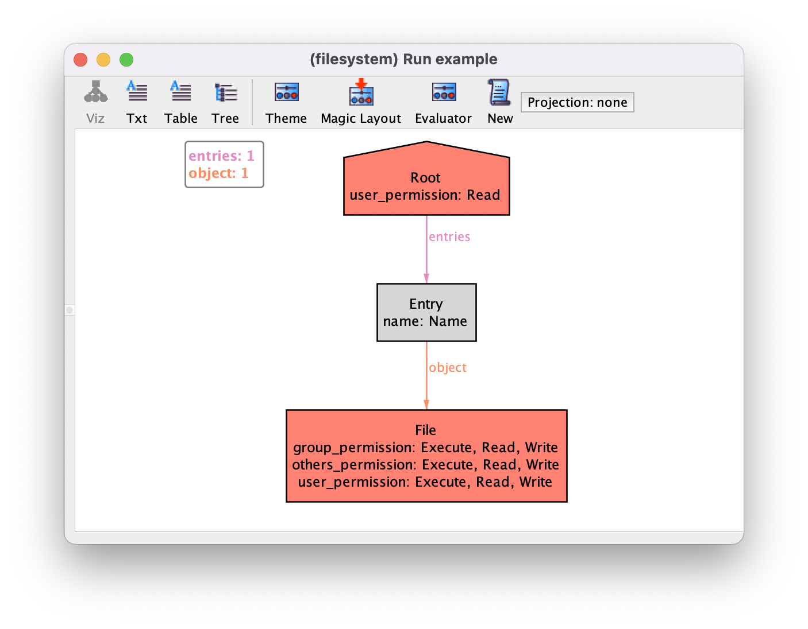

Module system#
Alloy provides a simple module system to promote the modularisation and reusability of models. In other chapters we’ve already seen how to use some of the utility modules that come packaged with the Analyzer. This chapter explores how to create new ones.
Declaring simple modules#
To create a new module in Alloy you just need to create a new .als file
and add it to the same directory as the main model, possibly inside other
sub-directories. You can declare the module name using the module
keyword, but note that only the file name is used to search for modules to be
included. To include a module in another model, we must to use an open
instruction with the path to the corresponding file (without the .als
extension). The module and open instructions must appear at
the top of the model, before any other declaration. After a module is opened all
its definitions are included in the main module, and you can refer to them by
their identifier directly, or use its full qualified name using a /
separator. In particular, if the Analyzer is not able to disambiguate an
identifier, you may use the qualified name to disambiguate. If this becomes
cumbersome, you can open a module with an alias using the keyword as.
Let us get back to the file system example from the main chapter
Structural modeling. The shape we have imposed on the file system is
actually that of a directed acyclic graph (DAG). Additionally, it is a rooted
graph, since there is a single node without a parent (Root). This shape
is enforced by the combination of facts no_indirect_containment and
no_dangling_objects in the original file system model, but since this
is a common shape in software models, it makes sense to provide these
constraints in a separate module to promote reusability.
Let us create a new Alloy model file and name it graph.als. A binary
relation over a set of nodes defines a DAG if it is acyclic. So we can just
declare the following predicate.
pred dag [node: set univ, r: node -> node] {
all n: node | n not in n.^r
}
On the other hand, a graph has a root if all other nodes are reachable from that node, a constraint that can be encoded as follows.
pred rootedAt [node: set univ, r: node -> node, root: node] {
node in root.*r
}
Getting back to our file system model, what actually forms a rooted DAG is the
relation between objects and its contents after abstracting away the
intermediate entry atoms, that is, the composed relation
entries.object. So, after including the new auxiliary model with
open graph, we could just enforce the following fact in the main
module, replacing no_indirect_containment and
no_dangling_objects.
fact rooted_dag {
dag[Object,entries.object]
rootedAt[Object,entries.object,Root]
}
Alternatively, we could have used the qualified names of the predicates as
graph/dag and graph/rootedAt.
Parametrized modules#
You may have noticed that all predicates declared above required as input the
set of nodes on which the graph if formed. This can get a bit cumbersome, and
can be avoided by using module parameters. Alloy modules can be declared with
signature parameters, that are specified by the including modules. These are
declared after its name in the module declaration between square
brackets. These module parameters can be used as regular signatures in the
model, including as the type of fields and predicates. The parameter declaration
can also be marked with keyword exactly, which enforces an exact scope
on that signature.
For our example, we would declare the graph utilities module as
graph[node] so that the set of nodes comprising the graph get specified
when the module is first opened. Then, the predicates within would be rewritten
assuming that the set of graph nodes is now provided as a parameter of the
module.
module graph[node]
pred dag [r: node -> node] {
all n: node | n not in n.^r
}
pred rootedAt [r: node -> node, root: node] {
node in root.*r
}
Note that you can still define commands in parametrized modules in order to
validate them. In that case module parameter signatures will be treated as any
arbitrary signature. For instance, we could write the following run command
in our graph module.
run dag_example {
some r: node -> node | dag[r]
} for exactly 4 node
This is an example of a higher-order quantification, possible in certain contexts due to Skolemization. A possible resulting instance is shown below.

Getting back to our file system example, we want to force a rooted DAG over file
system objects. So we include the graph module as open graph[Object],
and then rewrite the fact rooted_dag as follows.
fact rooted_dag {
dag[entries.object]
rootedAt[entries.object,Root]
}
What we just defined is actually part of the utility module util/graph,
which builds on the util/relation utility module. These come packaged
with the Analyzer, and contain many more common properties that can be tested
over relations and graphs. They can be inspected through menu option
.
Extending the structure with auxiliary modules#
Sometimes it is useful for auxiliary modules to introduce additional structure into the main module. New signatures, and associated fields, can be introduced in the auxiliary module. However, we cannot introduce new fields for signatures of the main module directly, although there are workarounds to this limitation.
For the sake of example, let us try to encode a simple auxiliary module that
introduces timestamps in over a given signature. We’ll call this module
timestamp, and it takes as a parameter the signature A to which
the timestamps will be assigned, and the signature T representing the
actual timestamps.
module timestamp[A,T]
Our timestamp module will be very simple for the sake of example: we want
timestamps to be comparable, to be assigned to every A atom, and to be
exhaustively used (i.e., no free dangling timestamps). To allow the comparison
of timestamps, we can impose a total ordering over T with the utility
module util/ordering.
open util/ordering[T]
Next, we want to define a new binary relation that assigns timestamps from
T to elements of A. We cannot introduce new fields in
A directly, but we can introduce a new auxiliary singleton signature
with a ternary field between A and T, and then just project it
when needed.
one sig TimeAux {
aux_time : A -> T
}
For instance, to impose the desired multiplicity of the timestamp field, we can
enforce the following fact. Note that since TimeAux is a singleton
signature, TimeAux.aux_time simply returns a binary relation between
A and T.
fact time_mult {
TimeAux.aux_time in A some -> one T
}
Now, let us get back to our file system model and include this module. We define
a new signature representing the timestamps, and then open the auxiliary module
timestamp over the objects of the file system.
open timestamp[Object,Timestamp]
sig Timestamp {}
Field aux_time is now accessible from the main module, and we can now
impose additional restrictions on timestamps. For instance, we can force the
timestamps of the contents of a directory to be after the timestamp of the
directory itself as follows. Relation next is provided by
util/ordering over the timestamps.
fact time {
all d:Dir | d.entries.object.(TimeAux.aux_time) in d.(TimeAux.aux_time).*next
}
The new elements will also show up in the visualizer, as follows. Notice how atoms introduced by other modules appear with the qualified name by default. This label can be changed by customizing the theme.
{kind=link}
While this strategy of defining a singleton auxiliary signature is functional, it is not ideal in terms of maintainability.
Making things private#
To avoid using the projected ternary relation, we can derive a binary relation
from the auxiliary aux_time by declaring an auxiliary function that
projects away TimeAux, as follows.
fun time : A -> T {
TimeAux.aux_time
}
We want to provide this derived relation to including modules, and hide the fact
that it uses an auxiliary signature. Alloy allows any declaration in a module to
be marked as private. This makes the element inaccessible from any module that
includes the auxiliary module. In our example, we can make TimeAux (and
the field within) private as follows.
private one sig TimeAux {
aux_time : A -> T
}
Now TimeAux is no longer visible in the file system module, but only
the derived relation time. So the fact shown above would be rewritten
as follows.
fact time {
all d:Dir | d.entries.object.time in d.time.*next
}
If you now generate an instance you’ll notice that the auxiliary signature is
omitted in the visualizer. Unfortunately, the binary time is also not
visible. This is because auxiliary functions from included modules are not
included in the visualization. You may also notice that, although private
signatures are omitted, the corresponding atoms still belong to the universe
(there is no notion of private atom). So, for instance, if you evaluate
univ in the evaluator atoms from private signatures will appear. In our
file system example, you’ll see in the universe an atom
timestamp/TimeAux$0 representing the singleton auxiliary signature
TimeAux. Perhaps surprisingly, you’ll also see an atom
timestamp/ordering/Ord$0. This because the approach just presented is
precisely the one followed in util/ordering to introduce a total
ordering over a given parameter signature with a derived relation next,
and that atom corresponds to the singleton auxiliary signature introduced.
Todo
not anymore in figure 6.1, these functions will show in viz
As a last note, you can include the same module multiple times with different
signature parameters. For instance, here we could additional declare
open timestamp[Entry,Timestamp] as an additional time relation
would assign timestamps to entries. Alloy will try to disambiguate calls to
time using its type system. For instance, the fact above would still be
valid since from the type of d it identifies the time relation
defined for objects. Nonetheless, it may help to open those modules with an alias
using as.
Further reading
ordering moduleWe’ve used the ordering module to impose a total ordering on timestamps, learn more about how it works.
Further reading
We’ve used the evaluator to validate our model, learn in more detail how it works.